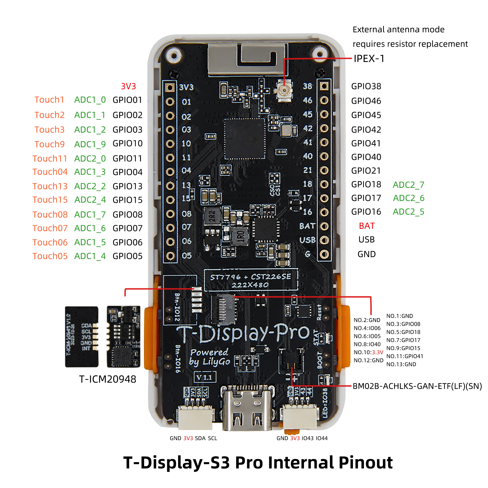
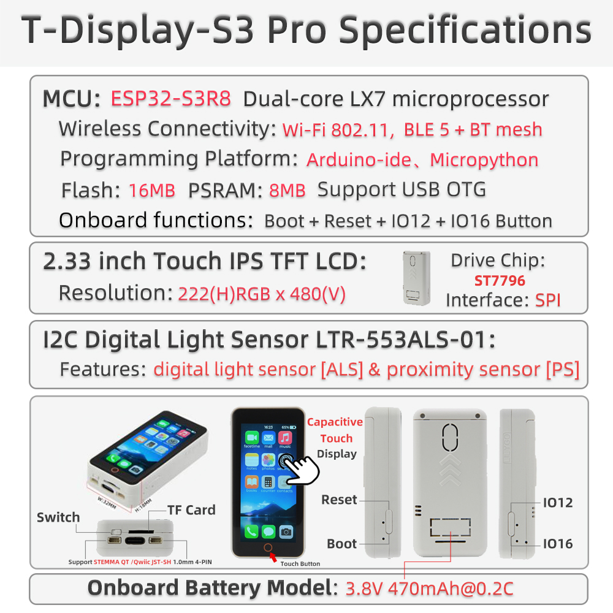

中文 简体
中文 简体LILYGO T-Display S3 Pro

🚀 产品概述
T-Display S3 Pro 是一款基于 ESP32-S3 的高性能开发板，配备 2.2 英寸 222×480 全彩 IPS 显示屏，支持电容触摸、摄像头扩展、USB OTG 及多种外设。内置 SY6970 电源管理芯片，支持锂电池充电和电源路径管理。板载 TF 卡槽、环境光传感器、姿态传感器等，适用于智能家居、便携设备、多媒体应用等场景。最新 V1.1 版本采用恒流背光驱动，提升显示稳定性。
核心特性
- ✅ 高性能主控：ESP32-S3R8 双核 LX7 处理器，16MB Flash + 8MB OPI PSRAM
- ✅ 高亮 IPS 屏：2.2 英寸 222×480 分辨率，全视角显示
- ✅ 电容触摸：CST816S 触摸芯片，支持手势识别
- ✅ 丰富外设：摄像头接口、TF 卡槽、环境光传感器、姿态传感器（MPU9250/MPU6050）
- ✅ 电源管理：SY6970 支持 1.5A 充电电流，带电源路径管理和 OTG 输出
- ✅ 扩展接口：2×13 双排排针、STEMMA QT / QWIIC I2C 接口
- ✅ 无线连接：2.4GHz Wi-Fi & Bluetooth 5 (LE)
📊 硬件规格
| 项目 | 参数 |
|---|---|
| MCU | ESP32-S3R8 (双核 LX7, 240MHz) |
| Flash | 16MB |
| PSRAM | 8MB (OPI PSRAM) |
| 显示屏 | 2.2 英寸 IPS，分辨率 222×480，驱动 ST7789V2 |
| 触摸 | 电容触摸 CST816S (I2C 地址 0x15) |
| 电源管理 | SY6970 (支持 1.5A 充电，电源路径管理，OTG 输出) |
| 传感器 | LTR553 环境光/接近传感器 (I2C 地址 0x23) |
| 姿态传感器 | 可选 MPU9250 / MPU6050 |
| 存储扩展 | TF 卡槽 (SPI) |
| 无线 | 2.4GHz Wi-Fi 802.11 b/g/n + Bluetooth 5 (LE) |
| USB | 1 × USB-C (支持 OTG) |
| 扩展接口 | 2×13 双排排针，摄像头接口 (DVP)，STEMMA QT / QWIIC (I2C) |
| 按键 | RESET + BOOT |
| 定位孔 | 4 × 2mm |
| 尺寸 | 56.5 × 56.5 × 9.6 mm |
🔄 版本迭代
| 版本 | 发布日期 | 更新说明 |
|---|---|---|
| T-Display-S3-Pro V1.0 | 2023-08-01 | 初始版本，PWM 背光 |
| T-Display-S3-Pro V1.1 | 2023-11-01 | 升级为恒流背光驱动，USB-C 接口标记 V1.1 |
🧩 模块详解
1. 主控 (MCU)
- 芯片：ESP32-S3R8
- Flash：16MB
- PSRAM：8MB (OPI PSRAM)
- 更多资料请参考 乐鑫 ESP32-S3 数据手册
2. 显示屏
- 尺寸：2.2 英寸
- 分辨率：222×480
- 类型：IPS
- 驱动：ST7789V2（兼容）
- 通信接口：SPI
- 兼容库：TFT_eSPI、Arduino_GFX
3. 触摸
- 类型：电容触摸
- 芯片：CST816S
- 接口：I2C (地址 0x15)
4. 电源管理
- 芯片：SY6970
- 充电电流：最大 1.5A
- 电池类型：单节锂电池 (3.7V~4.2V)
- 特色功能：电源路径管理、OTG 输出、物理开关切断电池
5. 传感器
- 环境光/接近：LTR553 (I2C 地址 0x23)
- 姿态：MPU9250 / MPU6050 (部分版本可选)
6. 扩展接口
- 摄像头：DVP 接口 (支持 OV2640/OV5640)
- TF 卡：SPI 接口
- USB-C：支持 OTG (5V 500mA 输出)
- GPIO：2×13 双排排针
- I2C：STEMMA QT / QWIIC 接口
🔌 引脚图


🚀 快速开始

开发环境支持
示例程序
| 示例 | PlatformIO | Arduino | 说明 |
|---|---|---|---|
| Factory | ✓ | ✓ | 出厂综合测试 |
| TFT_eSPI_Simple | ✓ | ✓ | TFT_eSPI 绘图基础 |
| AdjustBacklight | ✓ | ✓ | 背光调节（区分 V1.0/V1.1） |
| PMU_Example | ✓ | ✓ | 电源管理配置与电池信息 |
| USB_HID_Example | ✓ | ✓ | USB HID 和 OTG 功能 |
| CameraShield | ✓ | ✓ | 摄像头扩展板使用 |
| Cellphone | ✓ | ✓ | 拍照及相册（需 TF 卡） |
更多示例请访问 GitHub 仓库。
PlatformIO 使用步骤
- 安装 Visual Studio Code 并打开。
- 在扩展中搜索 “PlatformIO IDE” 并安装。
- 克隆项目：
git clone https://github.com/Xinyuan-LilyGO/T-Display-S3-Pro.git - 用 VS Code 打开项目文件夹。
- 打开
platformio.ini，在[platformio]下取消注释所需环境（如default_envs = t-display-s3-pro）。 - 点击左下角
√编译，→上传，🔌打开串口监视器。
Arduino IDE 使用步骤
- 安装 Arduino IDE。
- 添加 ESP32 开发板支持：
“文件” → “首选项” → “附加开发板管理器网址” 添加
https://raw.githubusercontent.com/espressif/arduino-esp32/gh-pages/package_esp32_index.json
然后在 “工具” → “开发板” → “开发板管理器” 中搜索并安装 ESP32。 - 将项目
lib文件夹下的所有库复制到 Arduino 库目录（如C:\Users\YourName\Documents\Arduino\libraries）。 - 打开示例文件（如
examples/TFT_eSPI_Simple/TFT_eSPI_Simple.ino）。 - 在 “工具” 菜单中选择如下配置：
| 设置项 | 推荐值 |
|---|---|
| Board | ESP32S3 Dev Module |
| Upload Speed | 921600 |
| USB CDC On Boot | Enabled |
| USB DFU On Boot | Disabled |
| CPU Frequency | 240MHz (WiFi) |
| Flash Mode | QIO 80MHz |
| Flash Size | 16MB (128Mb) |
| Partition Scheme | 16M Flash (3MB APP/9.9MB FATFS) |
| PSRAM | OPI PSRAM |
- 选择正确的端口，点击上传。
📊 性能测试（参考）
| 测试项 | 结果 | 备注 |
|---|---|---|
| 背光功耗（最大） | ≈120mA | V1.1 恒流驱动 |
| 充电电流 | 1.5A | SY6970 最大 |
| 触摸响应 | 正常 | 支持手势 |
| 摄像头兼容性 | OV2640/OV5640 | 需扩展板 |
| USB OTG 供电 | 5V 500mA | 需 PMU 启用 |
❓ 常见问题
Q1. 看了以上教程我还是不会搭建编程环境怎么办？
A. 可参考 LilyGo-Document 文档说明。
Q2. 为什么我的板子一直烧录失败？
A. 按住 BOOT 键，再按一下 RST 键，然后点击烧录，即可进入下载模式。
Q3. 如何区分 V1.0 和 V1.1 版本？
A. 查看 USB-C 接口旁边是否标注 “V1.1”；若无则为 V1.0。V1.1 使用恒流背光，调节方式不同，请使用对应示例。
Q4. 未连接电池时，上电后设备反复重启或指示灯闪烁？
A. 未接电池时需要关闭充电功能，否则会导致供电不稳定。可在初始化 PMU 时调用 PMU.disableCharge() 或参考 PMU_Example。
Q5. 使用 OTG 外设时无法识别？
A. 需在代码中启用 OTG 输出功能，同时注意此时 USB 输入不会对电池充电。
Q6. 屏幕不亮或背光异常？
A. 检查背光驱动方式是否与版本匹配（V1.0 用 PWM，V1.1 用恒流），并确保 PMU 正常供电。
📁 项目与资料
相关项目
- T-Display-S3-Pro 原理图
- T-Display-S3-Pro 背板设计文件
- T-Display-S3-Pro-MVSRBoard 扩展板
- T-Display-S3-Pro-MVSRLora 扩展板
官方资料
依赖库
- TFT_eSPI
- Arduino_GFX
- XPowersLib（电源管理）
- SensorLib（传感器）
- TouchLib（触摸）
- lvgl（图形库，可选）
- JPEGDEC（JPEG 解码）
- ESP32_USB_Stream（USB 音频流）
- ESP32-audioI2S（音频播放）